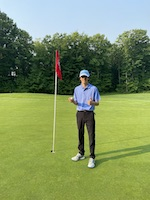

Welcome to Ryan's Website!
I am 19 years old, born and raised in Sault Ste. Marie, Ontario. This summer I spent most of my free time golfing at Crimson Ridge here in the Soo. Starting this summer, I began to play competitive golf; playing in 4 tournaments, two being in the Soo, one in Sudbury and one in Blind River. My goal for next season is to play for the Sault College team.
I am 19 years old, born and raised in Sault Ste. Marie, Ontario. This summer I spent most of my free time golfing at Crimson Ridge here in the Soo. Starting this summer, I began to play competitive golf; playing in 4 tournaments, two being in the Soo, one in Sudbury and one in Blind River. My goal for next season is to play for the Sault College team.
My Favourite MLB Team
| Table 1. Current Courses | |||
|---|---|---|---|
| Term | Course | ||
| Code | Name | Hours/Week | |
| Fall | CSD105 | Python | 3 |
| CMM115 | Communications I | 3 | |
| CSD120 | Introduction to Web Development | 4 | |
| CSO104 | Introduction to Operating Systems and LAN | 4 | |
| MTH122 | Computer Mathematics | 3 | |
| TNY130 | Technology in Society | 2 | |
| Winter | CSA103 | Business Applications I | 4 |
| CSD102 | Programming Using C++ | 5 | |
| CSD212 | Web Scripting Languages | 4 | |
| CSO102 | Introduction to Linux | 4 | |
| CST104 | PC Hardware and Networking | 5 | |
| Total | 41 | ||
Favourite Players
- Vladimir Guerrero Jr.
- Bo Bichette
- Alejandro Kirk
Haiku
Like crunchy cornflakes
Gold leaves rustle underfoot
Beauty in decay.
by